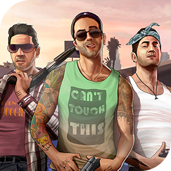
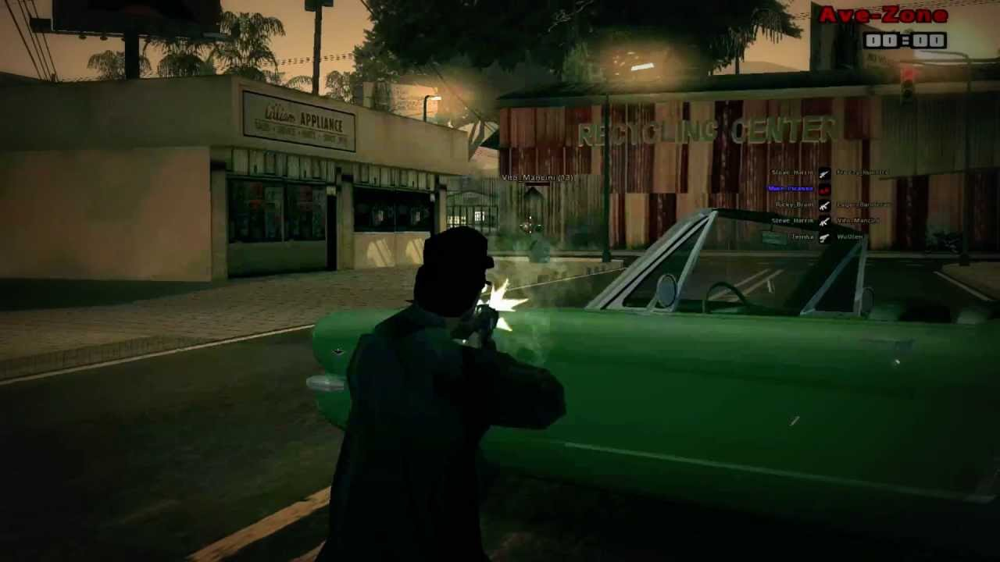
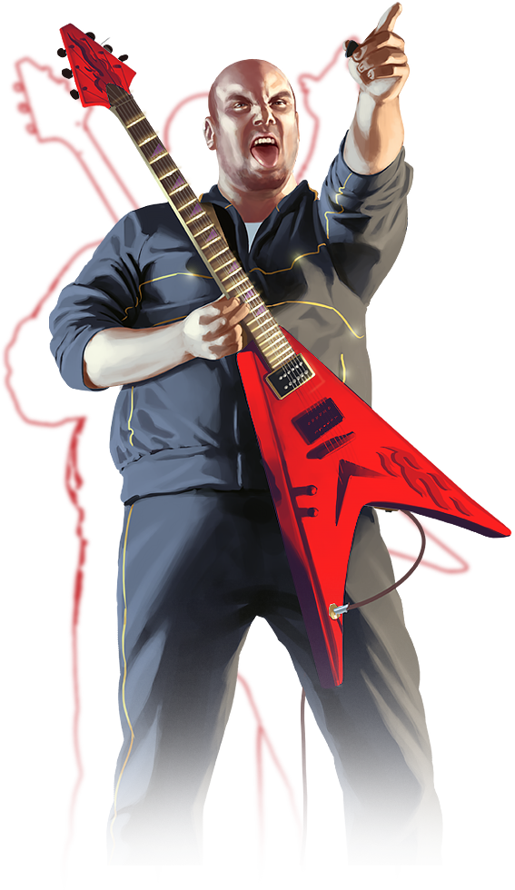

San Andreas Multiplayer
| San Andreas Multiplayer | |
|---|---|
| Разработчик | The SA-MP team |
| Дата выпуска | 10 мая 2006 |
| Последняя версия | 0.3.7 DL (13 января 2018) |
| Жанр | Модификация |
| Платформы | Windows, Linux (только сервер) |
| Режим игры | Многопользовательский |
| Веб-сайт | sa-mp.com |
San Andreas Multiplayer(SA-MP) — условно-бесплатная многопользовательская модификация для видеоигры Grand Theft Auto: San Andreas в версии для Windows, с закрытым исходным кодом. Разрабатывается командой The SA-MP team на добровольной основе, ведущими программистами проекта являются два человека с никами Kye (Kalcor) и spookie.
Содержимое старницы
История

Разработка SA-MP привлекла большой интерес среди поклонников игр серии GTA. В апреле 2006 года раздела на форуме GTAForums.com стало явно недостаточно, и разработчики решили открыть свой собственный форум. В конце марта разработка уже представляла собой полноценный мультиплеер, и, после некоторых закрытых бета-тестов, в апреле-мае было проведено три публичных бета-теста. Через несколько часов после третьего бета-теста, 9 мая 2006 года kyeman заявил, что проект полностью готов к выпуску. Однако, в релизе обнаружилось довольно много багов, и через несколько дней было выпущено обновление версии 0.1b. После этого пользователи продолжили изучать язык программирования Pawn и создавать разнообразные игровые режимы, а сами разработчики пропали на некоторое время.
Лишь в конце июня в сообщении на своем блоге они заявили, что разработка все ещё идет, хотя у них очень мало времени. Разработчики продемонстрировали несколько скриншотов с возможностью добавления объектов на карту. Ходили слухи, что скоро выйдет версия 0.1c, но до сентября новой информации от разработчиков не поступало. Лишь в конце сентября небольшое обновление на блоге сообщало, что разработка идёт, и был представлен небольшой список нововведений.
2 октября появилась информация о том, что готовится новая версия 0.2. Информация была подкреплена большим списком нововведений и видеороликом, показывающим множество новых возможностей. Информация вызвала волну интереса среди поклонников SA-MP, которых к тому моменту насчитывалось уже несколько тысяч по всему миру. Однако после этого новой информации не было несколько месяцев. Разработка очень сильно затянулась и, после нескольких небольших обновлений, 9 марта 2007 года разработчики представили на своем блоге превью версии 0.2 с большим списком изменений и двумя видеороликами, снятыми на закрытых бета-тестах. Также было объявлено, что в скором времени будет проведено несколько публичных бета-тестов.
До начала первого публичного бета-теста прошёл ещё целый месяц. К тому времени ажиотаж по поводу новой версии достиг невероятно огромного уровня, и разработчики решили не объявлять о бета-тесте на своём блоге, а в канун пасхи, 8 апреля, разместили на своей странице «пасхалку» — ссылку на страницу, которая через несколько перенаправлений выводила пользователя на IRC-канал бета-тестирования. Бета-тест начался вечером того же дня. Изначально был открыт один сервер на 100 слотов, но вскоре было запущено ещё несколько серверов. Бета-тест продлился до 11 апреля.
Следующий бета-тест прошёл только через месяц и продлился всего несколько часов. Целью теста было протестировать возможность сервера выдерживать до 200 игроков. После этого на блоге kyeman объявил, что будет проведено ещё как минимум 2 бета-теста. В конце мая прошёл ещё один бета-тест, после чего на блоге были объявлены некоторые нововведения.
Возможности SA-MP
Скрипты API
Благодаря скриптовому движку на языке Pawn, интегрированному в SA-MP, любой пользователь, имеющий определенные знания в программировании, может разрабатывать свои собственные игровые режимы и фильтрскрипты. Также на настоящий момент существует огромное количество так называемых игровых режимов в свободном использовании, в том числе множество крупных RPG/MMORPG режимов, таких как, например, PEN1:LS, The Godfather или GTO. PAWN позволяет любому создавать целые миссии в пределах игрового мира Grand Theft Auto: San Andreas.
Каждый игровой режим или фильтрскрипт используется сервером в виде отдельного файла. В любой момент может быть запущен только один игровой режим и до 16 фильтрскриптов. Режим, как правило, выполняет основные функции ведения игрового процесса, в то время как фильтрскрипты отвечают за сторонние функции сервера, которые могут быть подключены/отключены в любой момент без ущерба игровому процессу. Впрочем, такое разделение весьма условно и ничто не мешает перенести всю функциональность в режим или наоборот, вынести его в фильтрскрипты. Скриптовое API сервера содержит как активные функции, выполняемые в определенный момент, так и перехватчики событий, выполняемые автоматически при определенных событиях, как подключение игрока к серверу, запуск/остановка режима и т. д.
Стандартный набор сервера включает в себя несколько простых режимов и фильтрскриптов, демонстрирующих применение основных функций мультиплеера. Множество распространенных сейчас режимов представляют собой в разной степени модификации стандартных режимов.
Команды сервера
Скриптом режима задаются игровые команды. Они используются для облегчения игры. Команды начинаются со знака /. Например : /kill (самоубийство), /stats (статистика), /help (помощь). В каждом режиме свои команды, есть команды для телепортации, справки, и других действий (начало гонки, создание маркера, команды администратора и прочее).
Плагины
Начиная с версии 0.2, мультиплеер поддерживает возможность создания плагинов, расширяющих возможности сервера. Наиболее популярными являются плагины для работы с СУБД MySQL, чатами IRC-сети, рассылке электронных писем по протоколу SMTP.
Атака на сервера SA-MP
Флуд многократным пересоединением
С помощью специальной программы, которая эмулирует клиент, происходит подключение бота к серверу, после чего начинается многократное пересоединения (до 10 раз в секунду). Это вызывает очень частое выполнение колбека OnPlayerConnect на сервере, из-за чего сервер начинает подвисать. Прикрыть эту атаку очень просто, потому что во время этого флуда не выполняется OnPlayerDisconnect. Ниже приведен пример:

new PlayerConnected[MAX_PLAYERS char];
public OnPlayerConnect(playerid)
{
if(!PlayerConnected{playerid}) PlayerConnected{playerid} = 1;
else BanEx(playerid, "OnPlayerConnect Flood");
}
public OnPlayerDisconnect(playerid)
{
PlayerConnected{playerid} = 0;
}
Аудитория мультиплеера
| Регион | Аудитория |
|---|---|
| СНГ | 55.6 % |
| США | 21.9 % |
| Германия | 4.3 % |
| Польша | 3.1 % |
| Бразилия | 2.8 % |
| Турция | 1.4 % |
| Другие | 10.9 % |